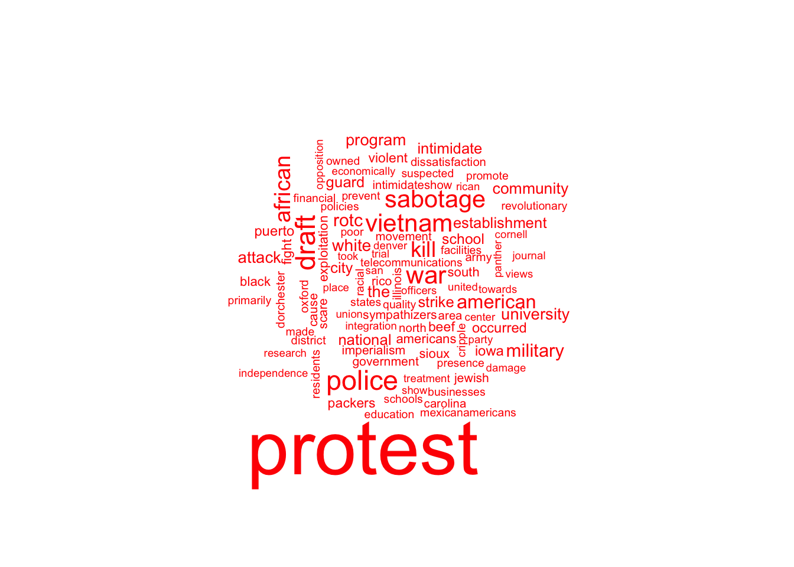
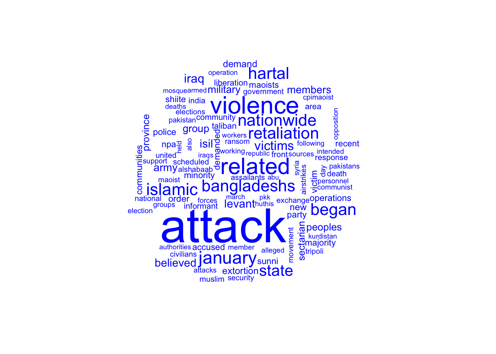
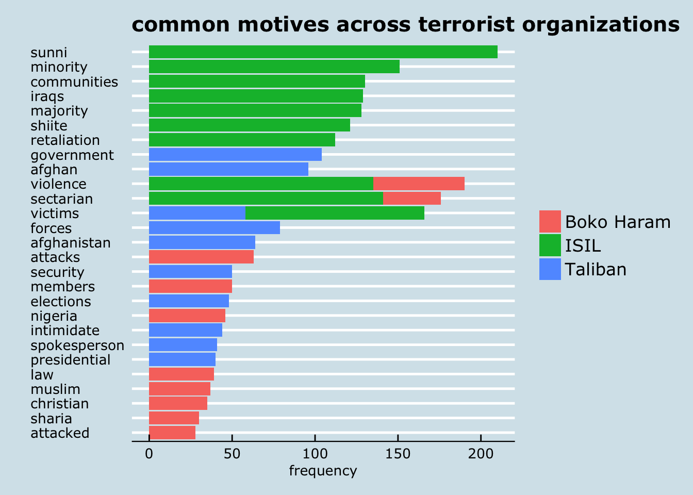

We now turn out attention to explore some of the trends in the motives behinds terrorist attacks. In order to do this, we use the stated motive in the GTD database and perform a “bag-of-word” analysis on the text to uncover some interesting patterns. One big limitation to our analysis here is the fact that not all incidents in the database have a stated motive, either because one was not available, or simple “measurement error”.
That said, we start our analysis by looking at the entire range of incidents reported in the GTD. After cleaning our text and removing standard stopwords, here are the most common terms used to describe the motive of a terrorist attack. Some obvious words pop out, including “attacks” and “victims”. We also see a large presence of the word “islamic”, “sectarian”, and “elections”.
Next, we try to identify some trends in these words over time. So, how would this world cloud look like if we only restrict our timeframe to the 1970s? We don’t need sophisticated analytical tools to see that many of the more popular terms we see below were clearly influenced by the Vietnam War.

What happens when we skip forward to 2015? The most obvious difference here is the appearance of more religious terms, particularly religious terms associated with Islam. Another interesting new term that appears here is “retaliation”, which indicates more of a conflict mentality than an open protest.

In the following section, we try to track the usage of certain important terms over time. We pick out some terms that have been quite topical in the news recently, as well as some terms that show up in our word clouds.
We start by looking at a term that now might seem obvious, but might have not been just a few years ago. Below we plot the frequency of the word “islam” or “islamic” over time. Interestingly, these words were practically absent from the GTD before 1990. The frequency peaked in 2006 during the height of the Iraq War, going back down to pre-1990 levels in 2010. In recent years, we’ve seen an explosion in the appearance of these terms.
Next, we look at the popularity of the word “protest” in the dataset and notice that the trend we see here is a bit more nuanced. Roughly, we see a U-shaped curve here, with the largest frequency of this term occurring in in 1970s during the Vietnam War. We see another peak around 2011-2013, coinciding with the Arab Spring movement.
Finally, the last terms we take a look at are the terms “police” and “government”. We notice an interesting correlation in the data between the frequency of these two terms. Could it be perhaps that the police bears the brunt of an unsatisfactory governemnt? Or perhaps it is the other way around?
Finally, we can also look at the most popular terms used to describe the motives of the largest terrorist organizations.
